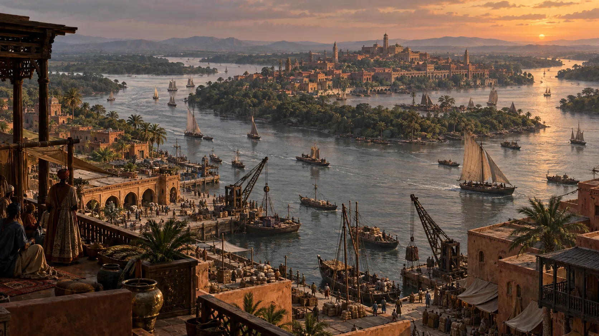
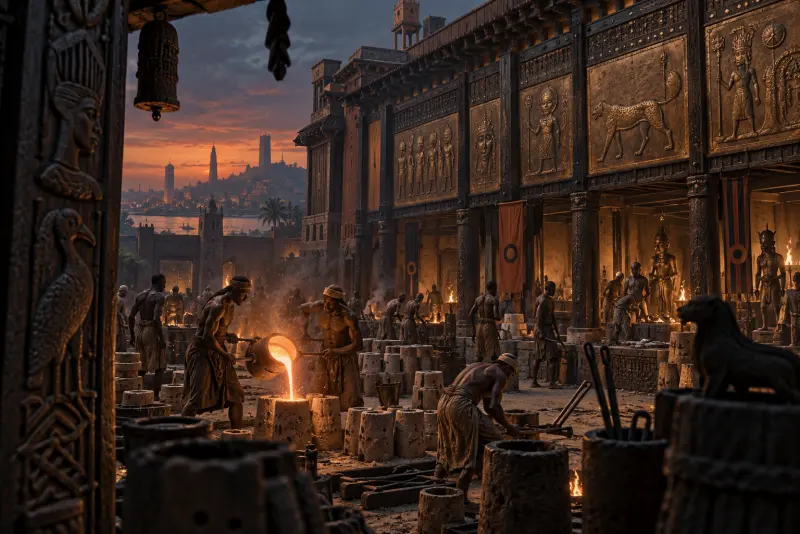
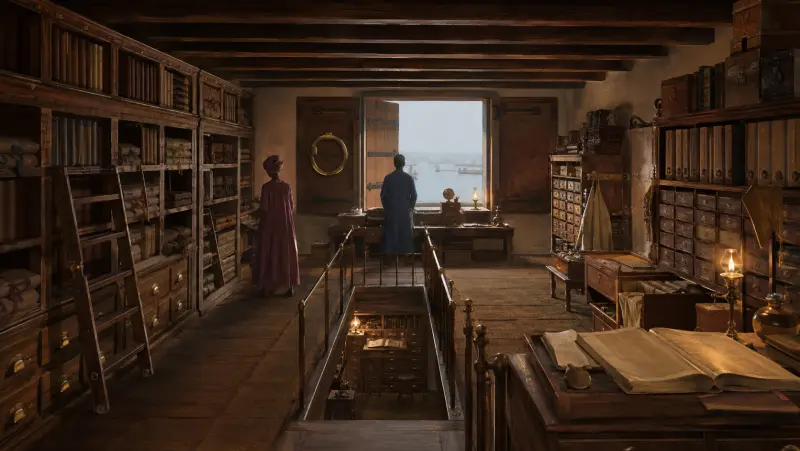
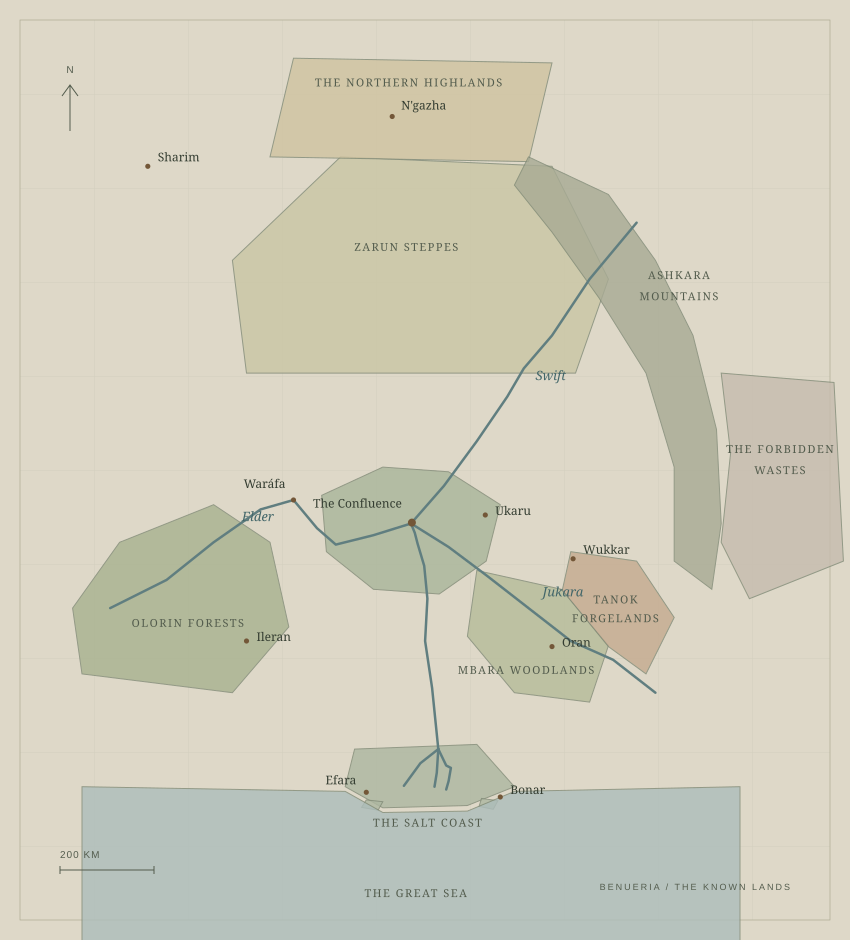

THE RIVER HEARTLAND
The Great Confluence
Three waters meet. Canoes thread the channels, languages mingle on the wharves, and every journey brings another version of the world.

A world at the turning of an age
The kingdoms have fallen.
The rivers remember.
MYTH. MEMORY. CONSEQUENCE.
THE WORLD OF THE CONFLUENCE SAGA
ELDER · SWIFT · JUKARA
THE GREAT CONFLUENCE
A continent of many peoples. Bound by three rivers. Living in the long shadow of an age no one fully remembers.
Caravans cross the northern steppe. Bronze is poured beneath the forest canopies. Along the Salt Coast, a dozen languages change hands with the day's catch.
Old crowns still cast shadows. Ancient roads lead where few will follow. And beneath the ordinary work of living, something older endures.
Follow the riversFollow a river. Step into a courtyard.
The world is larger than any one account of it.
THE RIVER HEARTLAND
Three waters meet. Canoes thread the channels, languages mingle on the wharves, and every journey brings another version of the world.

PLATE IIView artworkTHE OLORIN TRADITION
Lineage is cast in metal. The workshops keep their fires, the courtyards keep their histories, and the living work beneath the faces of the dead.

PLATE IIIView artworkTHE KEEPING OF MEMORY
A merchant's house becomes a home for records. Letters outlast their kingdoms. Somewhere between the lines, an older world waits to be read.
VISIONS OF BENUERIA · CONCEPT ART

THE KNOWN LANDS SELECT A REGION TO EXPLORE
From sun-scorched highlands to rain-heavy forest, the journey changes the traveler.
Grassland, thorn scrub, and seasonal streams stretch toward the desert. Caravans carry salt and copper between walled cities; the brief rains turn the plains green.
Some call them the Spine of God. Older highland songs call them the Broken Gates. The passes carry stories of roads that no living traveler has seen whole.
The Elder arrives brown with forest silt, the Swift cold from the northeast, and the Jukara from the southeast. Rice fields, river ports, and winding channels gather around their meeting.
Mahogany and iroko close over ancient cities. Rain, orchids, sacred groves, and walled towns surround traditions of sculpture, bronze-casting, and praise-poetry.
Woodland villages rise beside clear streams and open glades. Farther east, the land climbs into the red-earth Tanok plateau, where smith-clans supply the continent's iron.
The rivers divide into mangrove channels, marshes, and island chains. Fishing villages share the water with trading ports; storms sometimes uncover things the sea had kept.
A title, a prayer, a way of greeting.
Inheritance lives in more than thrones.
A tradition of one God and one law, austere beauty, disciplined charity, and aniconic art. In the old Dominion, a relic might be a treasure to one traveler and contraband to another.
Salt, copper, and the finest horses of the steppe once moved beneath the Mai's authority. Sky-Father worship rests over older fire traditions. N'gazha's Eternal Flame is cold, but its place in memory has not diminished.
Walled cities of merchants, each with its own Sarkin or Magajiya. Saru carries trade and proverbs across the north; prayer and libation may share the same day.
A riverine inheritance of clans, trade, and diplomacy. Languages meet as readily as currents. Ancient sluice-gates stand behind carvings of river gods.
Smith-clans of the high plateau, with the Aku of Wukkar as their ceremonial head. Skill carries its own authority here, and the sound of an anvil can belong to an entire valley.
Ileran, Ukaru, Ondé, and Egbala carry distinct traditions of sacred kingship, bronze, and sculpture. The Odu belong to thunder, iron, rivers, and the stories people tell about them.
Mbara village councils and the Convocation at Oran make a commonwealth without a king. Ancestors remain close; shrines and working yards stand within the same world.
Delta clans and trading principalities, with Efara and Bonar facing the sea. Traded cloth, water deities, fishing knowledge, and a cosmopolitan port vernacular travel far upriver.
The old warrior confederacy leaves its mark across the middle belt. In Waráfa, a university founded by refugees stands on former raiding grounds. The questions asked there are not always comfortable ones.
THE LIVING PRESENT
Beyond the old borders: market women's networks, smiths' guilds, river crews, pastoralists, scholars, and keepers of shrines. A shared pidgin travels between them—a language that belongs to no single fallen empire.
05 / OBJECTS & THEIR SILENCES
A carving passed between market women. An anvil that never seems to wear. A disk that hums beneath certain stars.
Every people has a name for what remains of the old world. A gift. A warning. A thing best left alone.
A small carved market-goddess, worn smooth by generations of hands. At the base, a spiral is nearly lost beneath the handling.
The great anvil rings pure across the valley. Its sides carry a script the smiths hold sacred; centuries of work have left it unworn.
A flat disk patterned with constellations. Point it toward certain stars, and a faint humming can be heard.
A beaded crown and veil, said to let the Ooni see with the eyes of gods. There are stories about others who tried to wear it.
AT THE EDGE OF THE KNOWN
Beyond the passes. Beneath the water.
Behind a name no one remembers choosing.